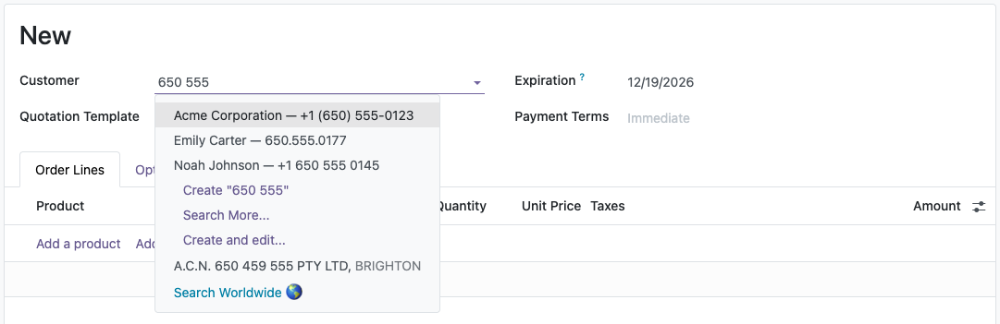
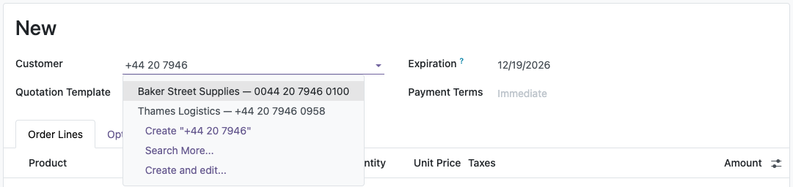
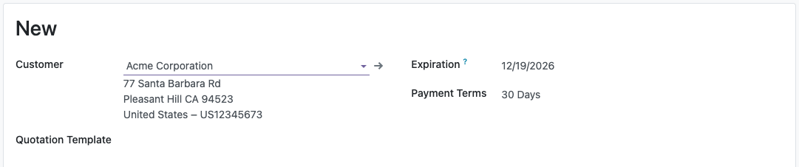

Type the number. The right customer appears.
A customer calls and gives a phone number. Type it in the Customer field of a quotation, in whatever format, and pick the contact. No more switching to Contacts to look it up.
It adds the phone number to the search Odoo already does for contacts.
Each suggestion shows its number, whatever format it was saved in.

+44 20 7946 finds both +44 20 7946 0958 and 0044 20 7946 0100.

After picking the suggestion, the field shows the customer name only.

No. Numbers stay as they are saved; only the search is smarter.
From 3 digits. Text mixed with digits, like "Warehouse 5", stays a normal name search.
Yes when the digits match: 6505550123 finds +1 (650) 555-0123. A national trunk prefix, such as a leading 0 that is not stored, is not added or removed.
| Odoo version | 18.0 (Community & Enterprise) |
| Depends | phone_validation (installed with Odoo mail) |
| Where it works | Every field and filter that searches contacts by name |
| Search | Case-insensitive contact search; negative operators unchanged |
| Tests | 18 automated tests: formats, international prefixes, digits of other scripts, unusual input and record rules |
| License | OPL-1 |